After getting to know the users of the kiosk, I set out to create personas that reflected their experiences and goals. The intent was to better understand the users and represent them without reducing them to stereotypes.
Thorough Theodora is a careful individual who likes to get the facts straight.
What does Thorough Theodora struggle with?
Thorough Theodora does her best to establish a good understanding of a task or problem
before diving into a solution. Unfortunately, this caution means that she can be easily overwhelmed
by an overload of information or feel nervous without enough instruction. She also
flusters easily if things do not go according to plan. When interacting with the kiosk,
she does not have a clear idea of where to start. Does she read the instructions on the wall
or follow the prompting on the screen? When her bill gets rejected, she is not sure what to do
because she had not planned for something like this to happen, and the instructions do not mention
what she should do if the bill acceptor rejects her money.
Who does Thorough Theodora represent?
Thorough Theodora represents users
who have not interacted with the kiosk before and who prefer to stick to methods that they know well.
The former trait was shared among all three real users who were interviewed, and the latter represents
those users' tendency to use a familiar online portal rather than a kiosk. She also reflects one particular user's challenges while using the interface, namely feeling overwhelmed by the simultaneous prompting from the screen and the instructions, as well as feeling apprehensive when she is unsure what to do.

Busy Brian is a swamped student who always seems to be on the move.
What does Busy Brian struggle with?
Busy Brian is short on time, so he is always trying to finish tasks as quickly as possible. He tends
to become impatient when he has to linger on a task or when he feels that something was a waste of
time. When interacting with the kiosk, he becomes slightly frustrated that he had to "waste time" reading
instructions for a task he thought was simple and intuitive. He also becomes annoyed when the bill
acceptor rejects his money. He considers leaving, as he has class soon.
Who does Busy Brian represent?
Busy Brian represents a full-time college student who is juggling classes, assignments, clubs, and more. The kiosk, which is used to add Bear Bucks to student IDs or to purchase guest cards, appears to be geared toward helping students manage their school funds. Thus, Busy Brian portrays the main user population: students, who tend to have numerous commitments throughout the day. He possesses some traits that appeared in the observed users: a willingness to stop using the kiosk if an inconvenience popped up, feeling that he did not need the instructions to navigate the kiosk, and simply reinserting his money when the bill acceptor rejected it.
Storyboard
My final strategy to understand the kiosk's users was to create a storyboard portraying one persona's interaction with the kiosk from start to finish. This technique places the persona in a particular scenario and attempts to represent their entire journey with the interface. Below, Thorough Theodora attempts to add money to her ID card with the Bear Bucks kiosk.
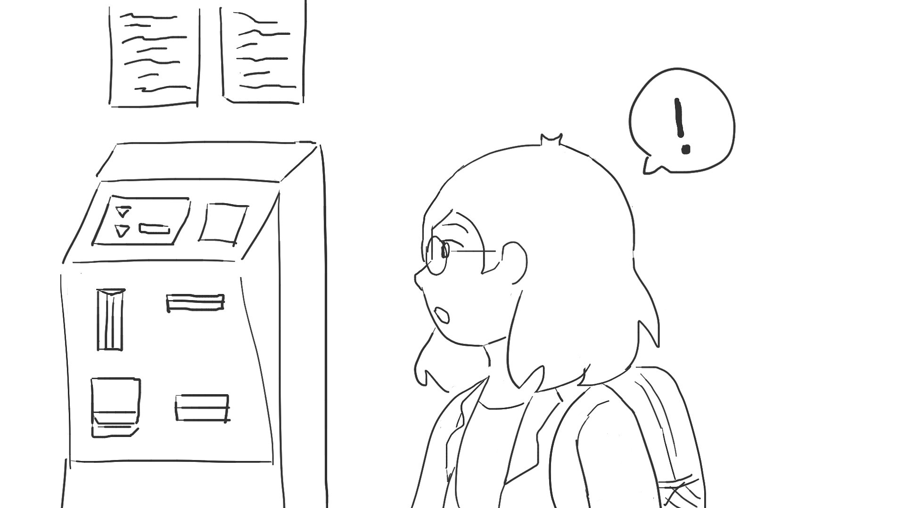
While walking through the campus center, Theodora notices a Bear Bucks kiosk.
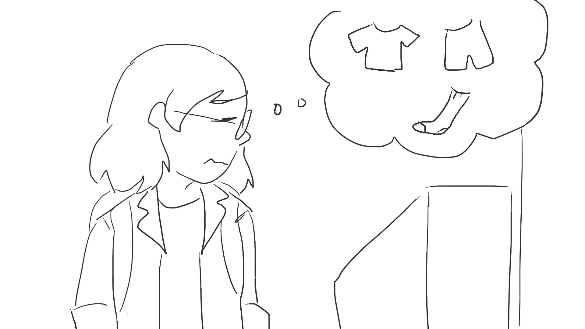
Theodora remembers that she needs more Bear Bucks on her ID so that she can do laundry.
She decides to give the kiosk a try while she's already here, hoping the process will be quick and easy.
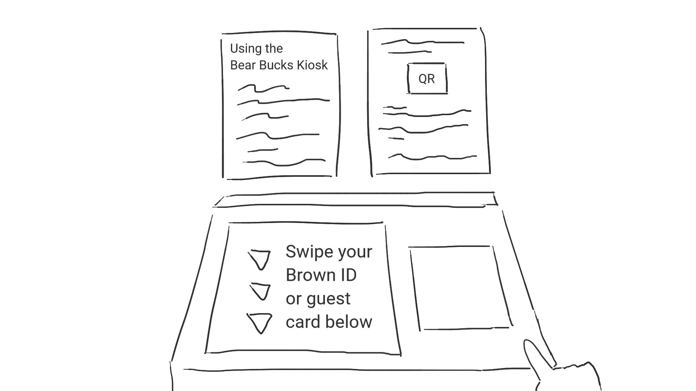
Theodora isn't sure where to start. "Should I follow the instructions on the screen or read what's on
the wall?" she thinks.
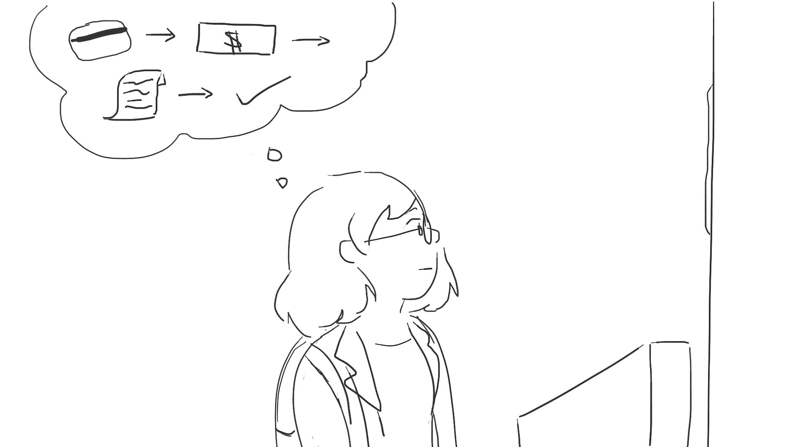
She decides to read the instructions on the wall, mentally forming a plan for using the kiosk. She notes that the kiosk is cash (bills) only. She also notices that the second sheet of instructions is about alternate methods of adding Bear Bucks to one's card, so she decides it's probably fine not to read it.
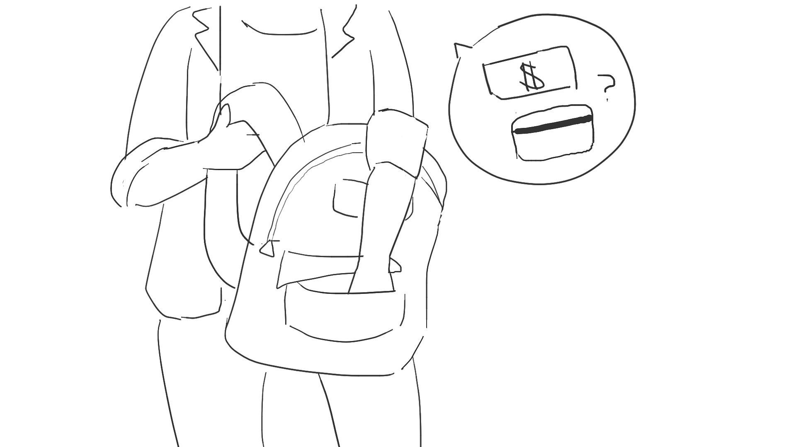
Theodora rummages through her bag for a spare bill and her ID. She
hasn't needed to use her ID yet today.
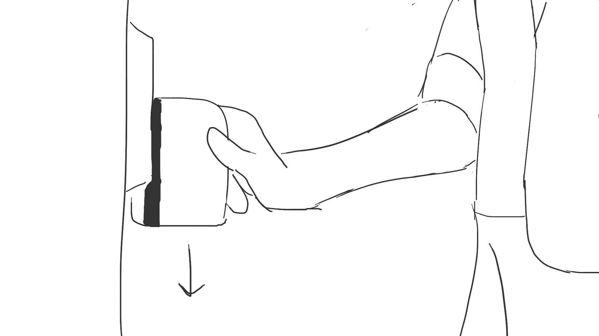
Theodora swipes her ID in the card swipe after a minute or two of rummaging.
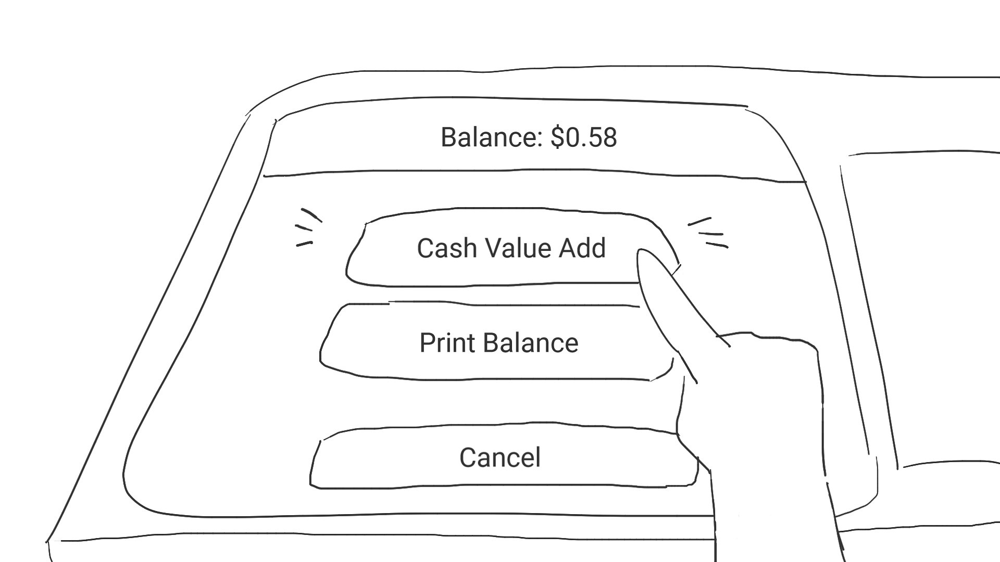
The screen prompts her to choose one of two options. Theodora chooses one, confident it is what she needs.
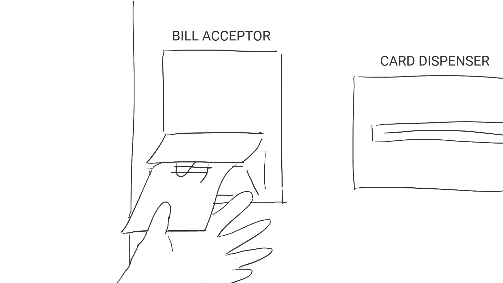
Theodora feeds her spare bill into the bill acceptor. "So far, so good," she thinks.
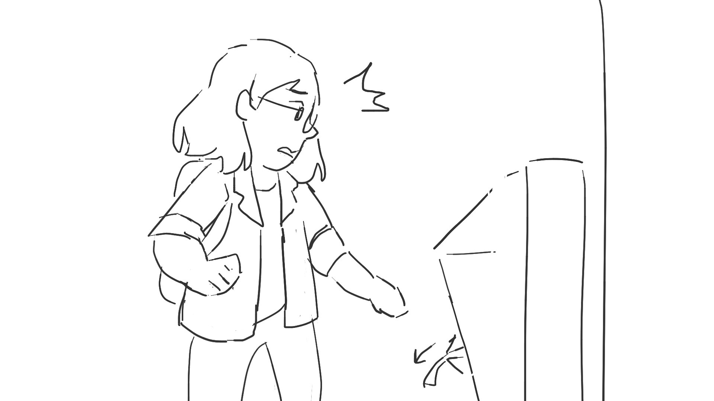
The bill is rejected. This catches Theodora off guard.
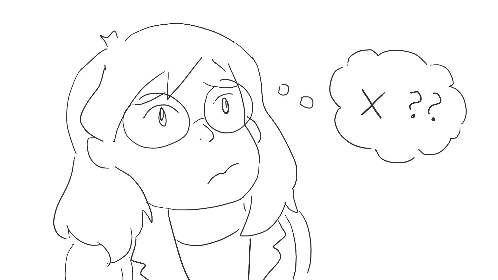
Theodora reads the instructions again. "Did I do something wrong? Did I miss something? Do the
instructions say what to do if the bill spits back out?"
Theodora decides to try feeding the bill to the kiosk one more time. She plans on asking for help
if the bill is rejected again, but hopes that she will be able to figure this out on her own. She nervously waits for the bill acceptor's verdict.
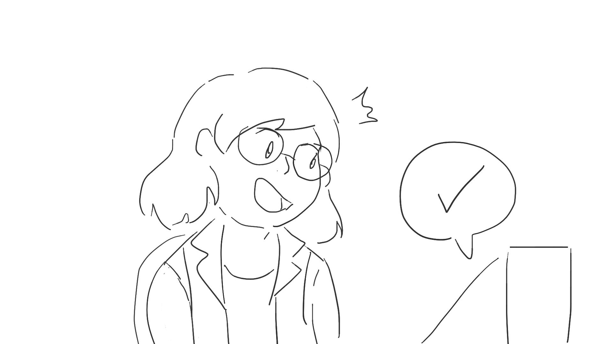
To her relief, the kiosk accepts the bill.
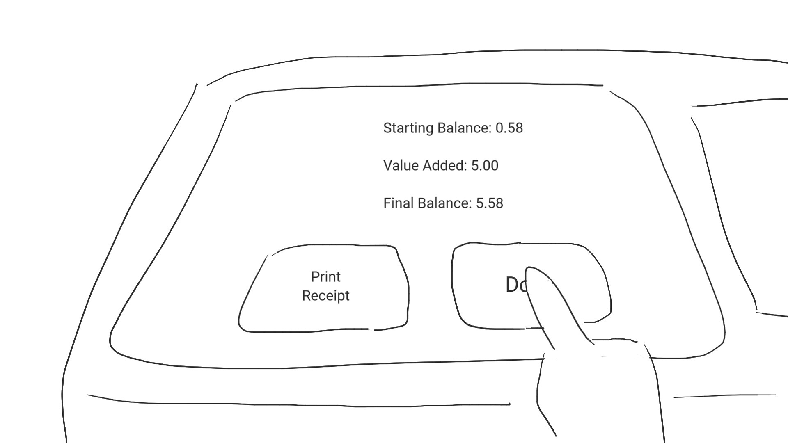
Theodora confirms her balance and finishes the process. She makes a mental note of this experience in case she ever needs to use the kiosk again.